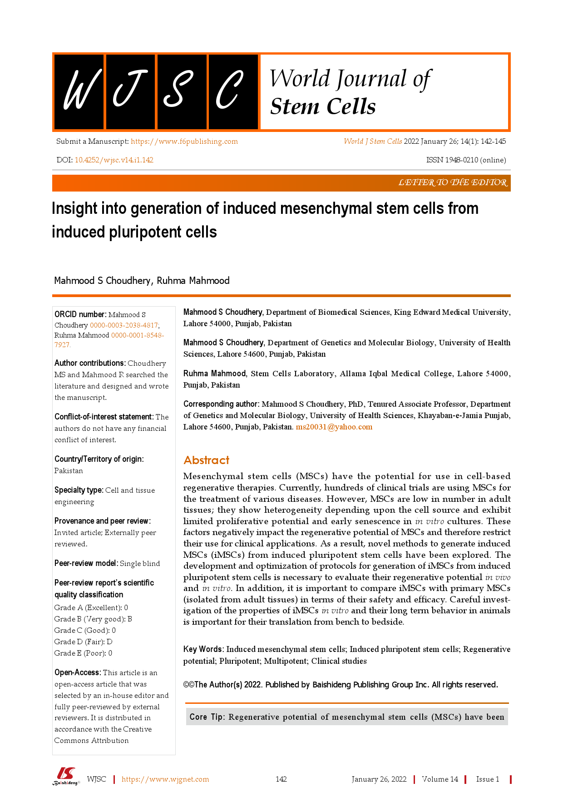
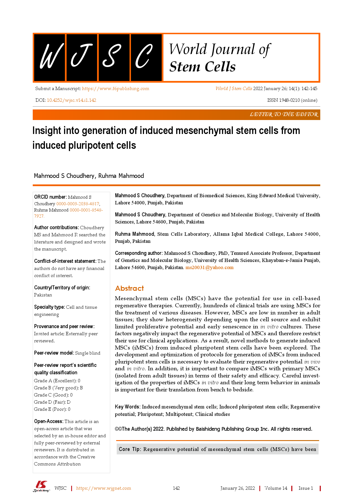
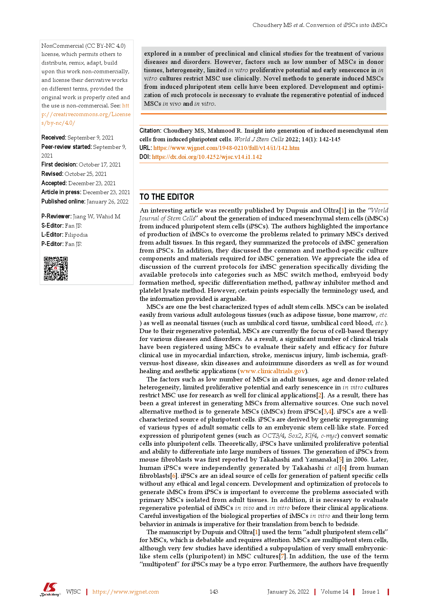
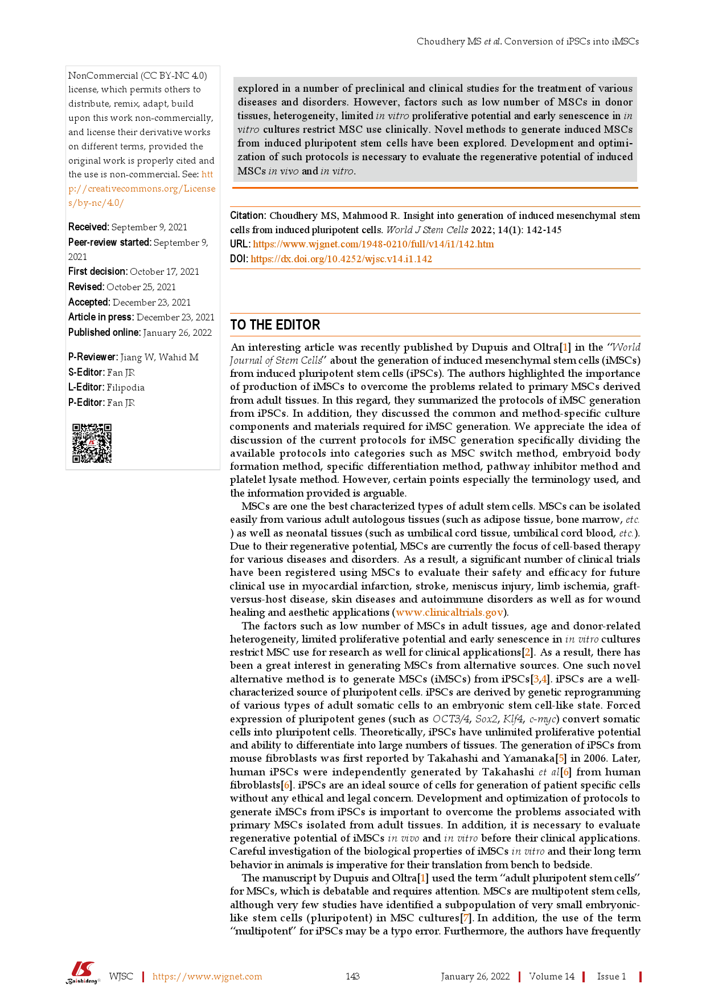
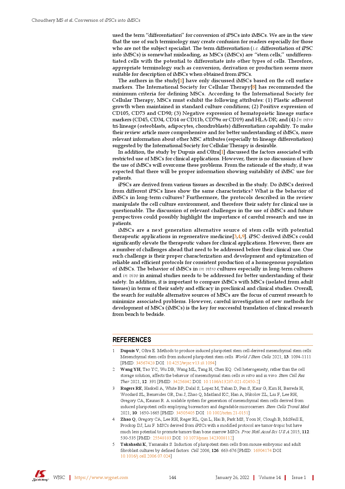
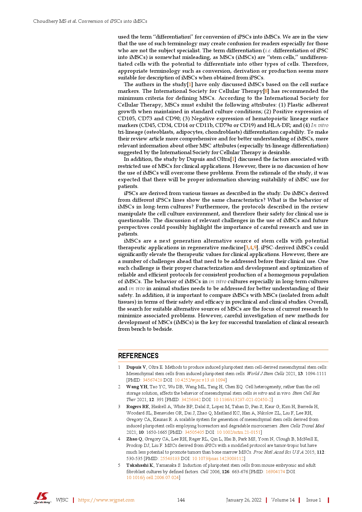

W J S C World Journal of
Stem Cells
Submit a Manuscript: https://www.f6publishing.com
DOI: 10.4252/wjsc.v14.i1.142
World J Stem Cells 2022 January 26; 14(1): 142-145
ISSN 1948-0210 (online)
LETTER TO THE EDITOR
Insight into generation of induced mesenchymal stem cells from induced pluripotent cells
Mahmood S Choudhery, Ruhma Mahmood
ORCID number: Mahmood S
Choudhery 0000000320384817; Ruhma Mahmood 000000018548
7927.
Author contributions: Choudhery
MS and Mahmood R searched the literature and designed and wrote the manuscript.
Conflict-of-interest statement: The
authors do not have any financial conflict of interest.
Country/Territory of origin:
Pakistan
Specialty type: Cell and tissue
engineering
Provenance and peer review:
Invited article; Externally peer reviewed.
Peer-review model: Single blind
Peerreview report’s scientific quality classification
Grade A (Excellent): 0 Grade B (Very good): B Grade C (Good): 0 Grade D (Fair): D Grade E (Poor): 0
Open-Access: This article is an
openaccess article that was selected by an inhouse editor and fully peerreviewed by external reviewers. It is distributed in accordance with the Creative Commons Attribution
Mahmood S Choudhery, Department of Biomedical Sciences, King Edward Medical University, Lahore 54000, Punjab, Pakistan
Mahmood S Choudhery, Department of Genetics and Molecular Biology, University of Health Sciences, Lahore 54600, Punjab, Pakistan
Ruhma Mahmood, Stem Cells Laboratory, Allama Iqbal Medical College, Lahore 54000, Punjab, Pakistan
Corresponding author: Mahmood S Choudhery, PhD, Tenured Associate Professor, Department of Genetics and Molecular Biology, University of Health Sciences, KhayabaneJamia Punjab, Lahore 54600, Punjab, Pakistan. ms20031@yahoo.com
Summary
Mesenchymal stem cells (MSCs) have the potential for use in cellbased regenerative therapies. Currently, hundreds of clinical trials are using MSCs for the treatment of various diseases. However, MSCs are low in number in adult tissues; they show heterogeneity depending upon the cell source and exhibit limited proliferative potential and early senescence in in vitro cultures. These factors negatively impact the regenerative potential of MSCs and therefore restrict their use for clinical applications. As a result, novel methods to generate induced MSCs (iMSCs) from induced pluripotent stem cells have been explored. The development and optimization of protocols for generation of iMSCs from induced pluripotent stem cells is necessary to evaluate their regenerative potential in vivo and in vitro. In addition, it is important to compare iMSCs with primary MSCs (isolated from adult tissues) in terms of their safety and efficacy. Careful investigation of the properties of iMSCs in vitro and their long term behavior in animals is important for their translation from bench to bedside.
Key Words: Induced mesenchymal stem cells; Induced pluripotent stem cells; Regenerative potential; Pluripotent; Multipotent; Clinical studies
©©The Author(s) 2022. Published by Baishideng Publishing Group Inc. All rights reserved.
Core Tip: Regenerative potential of mesenchymal stem cells (MSCs) have been
WJSC https://www.wjgnet.com
142
January 26, 2022 Volume 14 Issue 1
 

Choudhery MS et al. Conversion of iPSCs into iMSCs
NonCommercial (CC BYNC 4.0) license, which permits others to distribute, remix, adapt, build upon this work noncommercially, and license their derivative works on different terms, provided the original work is properly cited and the use is noncommercial. See: htt
p://creativecommons.org/License s/bync/4.0/
Received: September 9, 2021 Peerreview started: September 9,
2021
First decision: October 17, 2021 Revised: October 25, 2021 Accepted: December 23, 2021 Article in press: December 23, 2021 Published online: January 26, 2022
PReviewer: Jiang W, Wahid M SEditor: Fan JR LEditor: Filipodia PEditor: Fan JR
explored in a number of preclinical and clinical studies for the treatment of various diseases and disorders. However, factors such as low number of MSCs in donor tissues, heterogeneity, limited in vitro proliferative potential and early senescence in in vitro cultures restrict MSC use clinically. Novel methods to generate induced MSCs from induced pluripotent stem cells have been explored. Development and optimization of such protocols is necessary to evaluate the regenerative potential of induced MSCs in vivo and in vitro.
Citation: Choudhery MS, Mahmood R. Insight into generation of induced mesenchymal stem cells from induced pluripotent cells. World J Stem Cells 2022; 14(1): 142145 URL: https://www.wjgnet.com/19480210/full/v14/i1/142.htm DOI: https://dx.doi.org/10.4252/wjsc.v14.i1.142
TO THE EDITOR
An interesting article was recently published by Dupuis and Oltra[1] in the “World Journal of Stem Cells” about the generation of induced mesenchymal stem cells (iMSCs) from induced pluripotent stem cells (iPSCs). The authors highlighted the importance of production of iMSCs to overcome the problems related to primary MSCs derived from adult tissues. In this regard, they summarized the protocols of iMSC generation from iPSCs. In addition, they discussed the common and methodspecific culture components and materials required for iMSC generation. We appreciate the idea of discussion of the current protocols for iMSC generation specifically dividing the available protocols into categories such as MSC switch method, embryoid body formation method, specific differentiation method, pathway inhibitor method and platelet lysate method. However, certain points especially the terminology used, and the information provided is arguable.
MSCs are one the best characterized types of adult stem cells. MSCs can be isolated easily from various adult autologous tissues (such as adipose tissue, bone marrow, etc. ) as well as neonatal tissues (such as umbilical cord tissue, umbilical cord blood, etc.). Due to their regenerative potential, MSCs are currently the focus of cellbased therapy for various diseases and disorders. As a result, a significant number of clinical trials have been registered using MSCs to evaluate their safety and efficacy for future clinical use in myocardial infarction, stroke, meniscus injury, limb ischemia, graftversushost disease, skin diseases and autoimmune disorders as well as for wound healing and aesthetic applications (www.clinicaltrials.gov).
The factors such as low number of MSCs in adult tissues, age and donorrelated heterogeneity, limited proliferative potential and early senescence in in vitro cultures restrict MSC use for research as well for clinical applications[2]. As a result, there has been a great interest in generating MSCs from alternative sources. One such novel alternative method is to generate MSCs (iMSCs) from iPSCs[3,4]. iPSCs are a wellcharacterized source of pluripotent cells. iPSCs are derived by genetic reprogramming of various types of adult somatic cells to an embryonic stem celllike state. Forced expression of pluripotent genes (such as OCT3/4, Sox2, Klf4, cmyc) convert somatic cells into pluripotent cells. Theoretically, iPSCs have unlimited proliferative potential and ability to differentiate into large numbers of tissues. The generation of iPSCs from mouse fibroblasts was first reported by Takahashi and Yamanaka[5] in 2006. Later, human iPSCs were independently generated by Takahashi et al[6] from human fibroblasts[6]. iPSCs are an ideal source of cells for generation of patient specific cells without any ethical and legal concern. Development and optimization of protocols to generate iMSCs from iPSCs is important to overcome the problems associated with primary MSCs isolated from adult tissues. In addition, it is necessary to evaluate regenerative potential of iMSCs in vivo and in vitro before their clinical applications. Careful investigation of the biological properties of iMSCs in vitro and their long term behavior in animals is imperative for their translation from bench to bedside. for MSCs, which is debatable and requires attention. MSCs are multipotent stem cells, although very few studies have identified a subpopulation of very small embryoniclike stem cells (pluripotent) in MSC cultures[7]. In addition, the use of the term “multipotent” for iPSCs may be a typo error. Furthermore, the authors have frequently
WJSC https://www.wjgnet.com
143
January 26, 2022 Volume 14 Issue 1
 

Choudhery MS et al. Conversion of iPSCs into iMSCs
used the term “differentiation” for conversion of iPSCs into iMSCs. We are in the view that the use of such terminology may create confusion for readers especially for those who are not the subject specialist. The term differentiation (i.e. differentiation of iPSC into iMSCs) is somewhat misleading, as MSCs (iMSCs) are “stem cells,” undifferentiated cells with the potential to differentiate into other types of cells. Therefore, appropriate terminology such as conversion, derivation or production seems more suitable for description of iMSCs when obtained from iPSCs.
The authors in the study[1] have only discussed iMSCs based on the cell surface markers. The International Society for Cellular Therapy[8] has recommended the minimum criteria for defining MSCs. According to the International Society for Cellular Therapy, MSCs must exhibit the following attributes: (1) Plastic adherent growth when maintained in standard culture conditions; (2) Positive expression of CD105, CD73 and CD90; (3) Negative expression of hematopoietic lineage surface markers (CD45, CD34, CD14 or CD11b, CD79α or CD19) and HLADR; and (4) In vitro trilineage (osteoblasts, adipocytes, chondroblasts) differentiation capability. To make their review article more comprehensive and for better understanding of iMSCs, more relevant information about other MSC attributes (especially trilineage differentiation) suggested by the International Society for Cellular Therapy is desirable.
In addition, the study by Dupuis and Oltra[1] discussed the factors associated with restricted use of MSCs for clinical applications. However, there is no discussion of how the use of iMSCs will overcome these problems. From the rationale of the study, it was expected that there will be proper information showing suitability of iMSC use for patients. iPSCs are derived from various tissues as described in the study. Do iMSCs derived from different iPSCs lines show the same characteristics? What is the behavior of iMSCs in longterm cultures? Furthermore, the protocols described in the review manipulate the cell culture environment, and therefore their safety for clinical use is questionable. The discussion of relevant challenges in the use of iMSCs and future perspectives could possibly highlight the importance of careful research and use in patients. iMSCs are a next generation alternative source of stem cells with potential therapeutic applications in regenerative medicine[3,4,9]. iPSCderived iMSCs could significantly elevate the therapeutic values for clinical applications. However, there are a number of challenges ahead that need to be addressed before their clinical use. One such challenge is their proper characterization and development and optimization of reliable and efficient protocols for consistent production of a homogenous population of iMSCs. The behavior of iMSCs in in vitro cultures especially in longterm cultures and in vivo in animal studies needs to be addressed for better understanding of their safety. In addition, it is important to compare iMSCs with MSCs (isolated from adult tissues) in terms of their safety and efficacy in preclinical and clinical studies. Overall, the search for suitable alternative sources of MSCs are the focus of current research to minimize associated problems. However, careful investigation of new methods for development of MSCs (iMSCs) is the key for successful translation of clinical research from bench to bedside.
REFERENCES
1 Dupuis V, Oltra E. Methods to produce induced pluripotent stem cellderived mesenchymal stem cells: Mesenchymal stem cells from induced pluripotent stem cells. World J Stem Cells 2021; 13: 10941111 [PMID: 34567428 DOI: 10.4252/wjsc.v13.i8.1094] 2 Wang YH, Tao YC, Wu DB, Wang ML, Tang H, Chen EQ. Cell heterogeneity, rather than the cell storage solution, affects the behavior of mesenchymal stem cells in vitro and in vivo. Stem Cell Res
Ther 2021; 12: 391 [PMID: 34256842 DOI: 10.1186/s13287021024502] 3 Rogers RE, Haskell A, White BP, Dalal S, Lopez M, Tahan D, Pan S, Kaur G, Kim H, Barreda H, Woodard SL, Benavides OR, Dai J, Zhao Q, Maitland KC, Han A, Nikolov ZL, Liu F, Lee RH, Gregory CA, Kaunas R. A scalable system for generation of mesenchymal stem cells derived from induced pluripotent cells employing bioreactors and degradable microcarriers. Stem Cells Transl Med 2021; 10: 16501665 [PMID: 34505405 DOI: 10.1002/sctm.210151] 4 Zhao Q, Gregory CA, Lee RH, Reger RL, Qin L, Hai B, Park MS, Yoon N, Clough B, McNeill E, Prockop DJ, Liu F. MSCs derived from iPSCs with a modified protocol are tumortropic but have much less potential to promote tumors than bone marrow MSCs. Proc Natl Acad Sci U S A 2015; 112: 530535 [PMID: 25548183 DOI: 10.1073/pnas.1423008112] 5 Takahashi K, Yamanaka S. Induction of pluripotent stem cells from mouse embryonic and adult fibroblast cultures by defined factors. Cell 2006; 126: 663676 [PMID: 16904174 DOI:
10.1016/j.cell.2006.07.024]
WJSC https://www.wjgnet.com
144
January 26, 2022 Volume 14 Issue 1
Choudhery MS et al. Conversion of iPSCs into iMSCs
6 Takahashi K, Tanabe K, Ohnuki M, Narita M, Ichisaka T, Tomoda K, Yamanaka S. Induction of pluripotent stem cells from adult human fibroblasts by defined factors. Cell 2007; 131: 861872 [PMID: 18035408 DOI: 10.1016/j.cell.2007.11.019] 7 Bhartiya D. Are Mesenchymal Cells Indeed Pluripotent Stem Cells or Just Stromal Cells? Stem Cells
Int 2013; 2013: 547501 [PMID: 24187558 DOI: 10.1155/2013/547501] 8 Dominici M, Le Blanc K, Mueller I, SlaperCortenbach I, Marini F, Krause D, Deans R, Keating A, Prockop Dj, Horwitz E. Minimal criteria for defining multipotent mesenchymal stromal cells. The International Society for Cellular Therapy position statement. Cytotherapy 2006; 8: 315317 [PMID:
16923606 DOI: 10.1080/14653240600855905]
9 Guo NN, Liu LP, Zheng YW, Li YM. Inducing human induced pluripotent stem cell differentiation through embryoid bodies: A practical and stable approach. World J Stem Cells 2020; 12: 2534 [PMID:
32110273 DOI: 10.4252/wjsc.v12.i1.25]
WJSC https://www.wjgnet.com
145
January 26, 2022 Volume 14 Issue 1